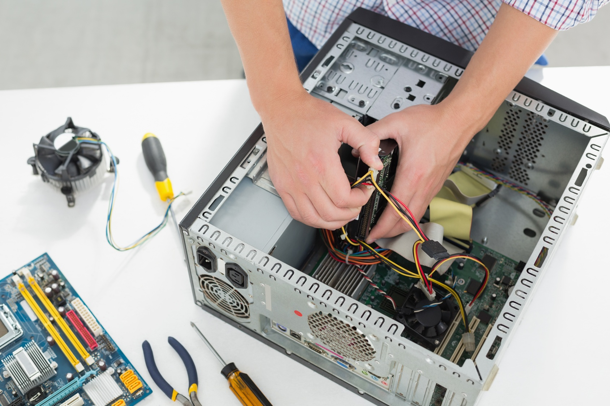
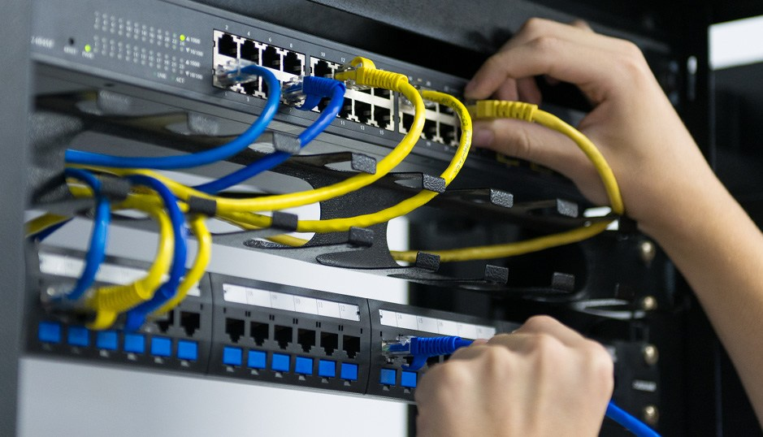

Guia de Cursos para iniciar e se especializar na carreira de T.I
Qual o objetivo do site?
Este site apresenta alguns cursos locais e presenciais para começar no mundo da tecnologia da informação, área que esta se tornando muito comum ultimamente junto com a chegada e evolução da inteligência artificial, temos 3 categorias, cada uma representa diferentes cargos da area da tecnologia em uma empresa. O objetivo é mostrar opções reais para quem deseja dar os primeiros passos na carreira de T.I, entendendo quais cursos podem ajudar em cada caminho.
Suporte técnico
A categoria de suporte técnico é a porta de entrada para quem deseja trabalhar diretamente com usuários e manutenção de computadores.

-
Informática Básica (SENAC)
Curso simples e introdutório para começar no meio da Informática, curso conta com ensinamentos do pacote office completo, conhecimento de hardware e software, básico da internet e ferramentas do windows, recomendado fortemente para usuários que desejam dominar os recursos básicos do computador com o sistema operacional Windows.
-
Manutenção e Suporte em Informática (SENAC)
Curso de Manutenção preventiva e corretiva de equipamentos de informática, identificando os principais componentes de um computador e suas funcionalidades com identificação das arquiteturas de rede e analisa de meios físicos, dispositivos e padrões de comunicação, avaliação da necessidade de substituição ou mesmo atualização tecnológica dos componentes de redes com instalação, configuração e desinstalação de programas básicos, utilitários e aplicativos.
-
Operador de computador (SENAI)
Curso preparando um profissional para usar e instalar aplicativos e sistemas operacionais software e entrada e saída de dados, mas com foco principal de começo de carreira em T.I
Infraestrutura (redes)
A área de infraestrutura cuida de redes, servidores e comunicação entre computadores, é essencial para manter empresas funcionando sem interrupções

-
Técnico em redes de computadores (IFPI):
Curso técnico focado na criação, manutenção e configuração de redes de computadores. Ensina montagem de estruturas de cabeamento, configuração de roteadores e switches, protocolos de comunicação e práticas de segurança. Recomendado para quem deseja atuar com infraestrutura de TI em empresas.
-
Tecnologia em redes (Uni-CET):
Graduação tecnológica que aprofunda conhecimentos em redes corporativas, administração de servidores, segurança digital, serviços de internet e virtualização. Indicado para quem pretende trabalhar com ambientes de grande porte e projetos avançados de infraestrutura.
Analista de sistemas
Analistas de sistemas planejam, modelam e desenvolvem soluções de software, essa é uma área que mistura lógica, programação e análise de problemas.
-
Técnico em Desenvolvimento de sistemas (IFPI):
Curso técnico voltado para lógica de programação, criação de aplicações, banco de dados e desenvolvimento web. Forma profissionais capazes de construir sistemas simples, aplicar estruturas de código e compreender o funcionamento da programação na prática.
-
Análise e Desenvolvimento de sistemas (IFPI):
Curso superior tecnológico que ensina análise de requisitos, modelagem de sistemas, programação, banco de dados e metodologias de desenvolvimento. Forma profissionais preparados para planejar, criar e implementar soluções de software utilizadas em empresas.
-
Ciência da computação (UFPI/UESPI):
Graduação completa e aprofundada na área de computação. Abrange algoritmos, estruturas de dados, redes, sistemas operacionais, desenvolvimento de software e inteligência artificial. Forma profissionais com visão ampla e capacidade de resolver problemas complexos da área de tecnologia.
Média salarial
Abaixo uma lista de média salarial das respectivas áreas
Tabela de media salarial de cada área de T.I
| Área | Faixa Salarial | ||
|---|---|---|---|
| Júnior | Pleno | Sênior | |
| Suporte Técnico | R$ 1600 - 1900 | R$ 2100 - 2400 | R$ 2500 - 2800 |
| Analista de Redes | R$ 2200 - 2700 | R$ 2700 - 3000 | R$ 3300 - 4000 |
| Analista de Sistemas | R$ 2500 - 2800 | R$ 3200 - 3700 | R$ 4300 - 6000 |
Links para mais informações de cursos
- SENAC Piauí – Cursos Profissionais
- SENAI – Cursos Técnicos e Industriais
- IFPI - Instituto Federal do Piauí
Voltar ao inicio da página